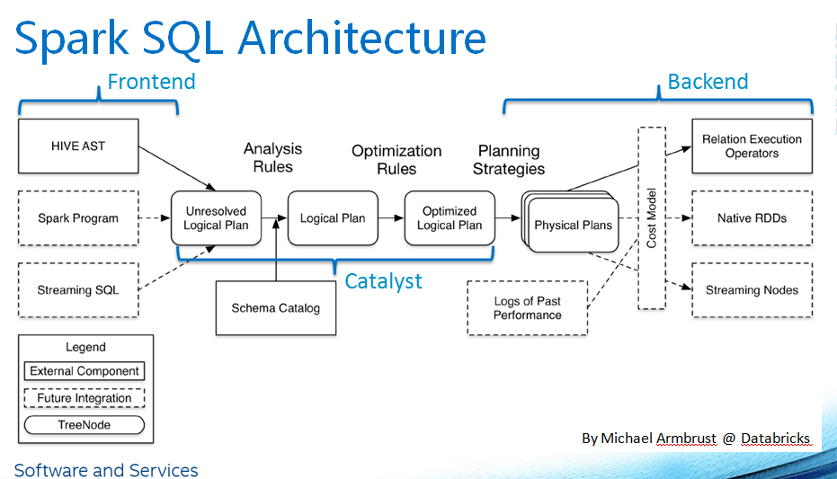

SparkSql
概念
- DataSet:
- DataFrame: 等同于数据库中的一张表
- SparkSession: 底层还是SparkContext
架构

SQL执行流程
–files/–jars 不能清空，需要改Spark Core Spark SQL源码
SQL字符串 ==> SQL parser 解析 ==> 生成逻辑执行计划 ==> 优化之后的逻辑执行计划 ==> 物理执行计划 ==> 优化之后的物理执行计划
- spark shell使用sql 需要使用–jars传入mysql jdbc包
spark-shell –master local[2] –jars mysql-jdbc.jar - spark sql使用需要多传入一个–driver-class-path 引入mysql jdbc包,其他数据库也是一样
spark-sql –jars mysql-jdbc.jar –driver-class-path mysql-jdbc.jar - RDD中的cache是lazy的，Spark SQL中的cache是eager的
SparkSql读取数据
- spark.read.format(“json).load(“path”)
- spark.read.textFile(“path”) // 结果是DataSet类型
- spark.read.json(“path”)
- df.show() 默认是20条数据，可以传数量。.show(flase) 对于数据不截取，默认长度是20
读取数据的三种方式：DataFrameReader
df.show()
df.show(100)
df.show(100, false)
df.select(df(“name”), df(“age”), df(“gender”))
df.select($”name”, $”age”).show() // 需要引入隐式转换 import spark.implicits._
读取复杂数据类型
df.select($”name”, $”info.desc”, $”info.sex”.as(“gender”))
RDD和DF、DS之间的转换
df.rdd
ds.toDF
过滤
- filter
df.filter(“name=’hufei’”).show()
df.filter(df(“name”) === “hufei”).show()
df.filter(‘name === “hufei”).show() - where 进去还是filter
写出去: DataFrameWriter
SaveMode // 枚举类型，Append, Overwrite
df.write.format(“json”).save(“path”)
不同数据源读写
json
1 | def json(spark: SparkSession): Unit = { |
text
1 | def text(spark: SparkSession): Unit = { |
csv
1 | def csv(spark: SparkSession): Unit = { |
jdbc
- 硬编码
1
2
3
4
5
6
7
8
9
10
11
12
13
14
15
16
17
18def jdbc(spark: SparkSession): Unit = {
val df = spark.read.format("jdbc")
.option("url", "jdbc:mysql://ruozedata001:3306")
.option("dbtable", "offsets.offsets_storage")
.option("user", "root")
.option("password", "ruozedata")
.load()
import spark.implicits._
df.printSchema()
df.filter('partitions === 0)
.write.format("jdbc")
.option("url", "jdbc:mysql://ruozedata001:3306")
.option("dbtable", "offsets.offsets_storage_2")
.option("user", "root")
.option("password", "ruozedata")
.save()
} - 写入配置文件
1
2
3
4
5
6
7
8
9
10
11
12
13
14
15
16
17
18
19
20
21
22
23
24
25
26
27
28def jdbc02(spark: SparkSession): Unit = {
val config = ConfigFactory.load()
val url = config.getString("db.default.url")
val user = config.getString("db.default.user")
val password = config.getString("db.default.password")
val srctable = config.getString("db.default.srctable")
val targettable = config.getString("db.default.targettable")
val driver = config.getString("db.default.driver")
val database = config.getString("db.default.database")
val df = spark.read.format("jdbc")
.option("url", url)
.option("dbtable", database+"."+srctable)
.option("user", user)
.option("password", password)
.option("driver", driver)
.load()
import spark.implicits._
df.printSchema()
df.filter('partitions === 0)
.write.format("jdbc")
.option("url", url)
.option("dbtable", database+"."+targettable)
.option("user", user)
.option("password", password)
.option("driver", driver)
.save()
}
SparkSql做统计分析
写sql
API实现
1 | def main(args: Array[String]): Unit = { |
spark 压缩方式
工作中文本处理方式
Reflection
DF ==> rdd spark.sparkContext.textFile(“”)
rdd ==> DF rdd.toDF // import spark.imlicits._ 导入隐式转换
案例：
1 | def main(args: Array[String]): Unit = { |
Programmatically(如果要和外部数据源对接，需要用这种)
- Create an RDD of Rows from the original RDD;
- Create the schema represented by a StructType matching the structure of Rows in the RDD created in Step 1.
- Apply the schema to the RDD of Rows via createDataFrame method provided by SparkSession.
案例：1
2
3
4
5
6
7
8
9
10
11
12
13
14
15
16
17
18
19
20
21
22
23
24
25
26
27
28
29
30
31
32
33
34
35
36
37
38
39
40
41def main(args: Array[String]): Unit = {
val spark = SparkSession.builder
.master("local")
.appName(this.getClass.getSimpleName)
.getOrCreate()
programmatically(spark)
spark.stop()
}
/**
* 使用编程方式
*/
def programmatically(spark: SparkSession): Unit = {
// RDD=>DF时需要的隐式转换
import spark.implicits._
// 创建RDD
val rdd = spark.sparkContext.textFile("ruozedata-spark-sql/data/info.txt")
// STEP1: RDD[String] ==> RDD[Row]
val infoRDD: RDD[Row] = rdd.map(x => {
val splits = x.split(",")
val id = splits(0).trim.toInt
val name = splits(1).trim
val age = splits(2).trim.toInt
Row(id, name, age)
})
// STEP2: schema
val schema = StructType(
StructField("id", IntegerType, true) ::
StructField("name", StringType, false) ::
StructField("age", IntegerType, false) :: Nil)
// STEP3: createDataFrame
val df = spark.createDataFrame(infoRDD, schema)
df.printSchema()
df.show()
}
case class Info(id: Int, name: String, age: Int)
spark.read.json()使用sql方式
查看官网处的sql
1 | CREATE TEMPORARY VIEW jsonTable |
跨数据源做join
hive: tab1DF
mysql: tab2DF
tab1DF.join(tab2DF, tab1DF.get(“id”) === table2DF.get(“2”))
1 | val mysqlDF = spark.read.format("jdbc") |
自定义数据源
- 导入数据，默认是向上兼容，比如整数和double会取Double
- 导入数据，Json里有个Mode：PermissiveMode(接受), DroMalformedMode(丢掉), FailFasterMode(报错), logWarning(警告)
1
2
3
4
5
6
7
8
9
10
11
12
13
14
15
16
17
18
19
20
21
22
23
24def main(args: Array[String]): Unit = {
val spark = SparkSession.builder
.master("local")
.appName(this.getClass.getSimpleName)
.getOrCreate()
import spark.implicits._
val df = spark.read.format("csv")
.option("header","true")
.option("inferSchema", "true")
.load("ruozedata-spark-sql/data/sales.csv")
val ds: Dataset[Sales] = df.as[Sales]
val selectDF = df.select("customerId")
val selectDS = ds.map(_.customerId)
println(selectDF.queryExecution.optimizedPlan.numberedTreeString)
println(".....................")
println(selectDS.queryExecution.optimizedPlan.numberedTreeString)
spark.stop()
}
case class Sales(transactionId:Int, customerId:Int, itemId:Int, amountPaid:Double)
spark catalog
1 | def main(args: Array[String]): Unit = { |
UDF、UDAF、UDTF
UDF 一进一出
案例：
1 | def main(args: Array[String]): Unit = { |
UDAF 多进一出
extends UserDefinedAggrageFunction{} // 实现这个函数
案例：
UDTF 一进多出
案例：
自定义数据源
评论